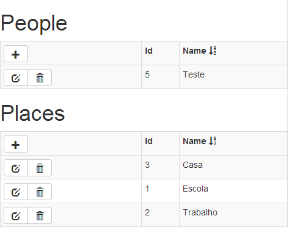

CRUD grid with AngularJS, WebAPI, Entity Framework (EF), Bootstrap, Font Awesome & Toastr
Here’s how I built a quick single entity CRUD grid with AngularJS, WebAPI, Entity Framework, Bootstrap, Font Awesome & Toastr. I spent a more time than I should have getting this all wired up, so I thought I’d share the code to save you some time. It’s not perfect – but should be a good starting point for you.
Here’s what the grid looks like.
The $http methods that call WebAPI
You could also do this with $resource or Restangular, but I just stuck with $http for this example because it is easier to grok.
Each of the methods below perform $http actions and return a promise.
var url = 'api/person/';
app.factory('personFactory', function ($http) {
return {
getPeople: function () {
return $http.get(url);
},
addPerson: function (person) {
return $http.post(url, person);
},
deletePerson: function (person) {
return $http.delete(url + person.Id);
},
updatePerson: function (person) {
return $http.put(url + person.Id, person);
}
};
});
var url = 'api/person/'; app.factory('personFactory', function ($http) { return { getPeople: function () { return $http.get(url); }, addPerson: function (person) { return $http.post(url, person); }, deletePerson: function (person) { return $http.delete(url + person.Id); }, updatePerson: function (person) { return $http.put(url + person.Id, person); } }; });
app.controller('IndexCtrl', function ($scope, personFactory, notificationFactory) {
$scope.people = [];
var successCallback = function (data, status, headers, config) {
notificationFactory.success();
return personFactory.getPeople().success(getPeopleSuccessCallback).error(errorCallback);
};
var successPostCallback = function (data, status, headers, config) {
successCallback(data, status, headers, config).success(function () {
$scope.toggleAddMode();
$scope.person = {};
});
};
var errorCallback = function (data, status, headers, config) {
notificationFactory.error(data.ExceptionMessage);
};
$scope.addPerson = function () {
personFactory.addPerson($scope.person).success(successPostCallback).error(errorCallback);
};
});
app.controller('IndexCtrl', function ($scope, personFactory, notificationFactory) { $scope.people = []; var successCallback = function (data, status, headers, config) { notificationFactory.success(); return personFactory.getPeople().success(getPeopleSuccessCallback).error(errorCallback); }; var successPostCallback = function (data, status, headers, config) { successCallback(data, status, headers, config).success(function () { $scope.toggleAddMode(); $scope.person = {}; }); }; var errorCallback = function (data, status, headers, config) { notificationFactory.error(data.ExceptionMessage); }; $scope.addPerson = function () { personFactory.addPerson($scope.person).success(successPostCallback).error(errorCallback); }; });
<!doctype html>
<html ng-app="app">
<head>
<title>AngularJS-WebApi-EF</title>
@Scripts.Render("~/bundles/jquery")
@Scripts.Render("~/bundles/angular")
@Scripts.Render("~/bundles/toastr")
@Scripts.Render("~/bundles/bootstrap")
@Styles.Render("~/content/bootstrap")
@Styles.Render("~/content/toastr")
</head>
<body>
<div ng-controller="IndexCtrl" ng-cloak>
<div style="width: 500px;">
<table class="table table-striped table-bordered table-condensed table-hover">
<tr>
<th style="width: 100px;">
<div class="btn-toolbar"><i class="btn icon-plus" ng-click="toggleAddMode()"></i></div>
</th>
<th style="width: 50px;">Id</th>
<th>Name</th>
</tr>
<tr ng-show="addMode">
<td>
<div class="btn-toolbar">
<div class="btn-group">
<i class="btn icon-save" ng-click="addPerson()"></i>
<i class="btn icon-remove" ng-click="toggleAddMode()"></i>
</div>
</div>
</td>
<td></td>
<td>
<input ng-model="person.Name" /></td>
</tr>
<tr ng-repeat="person in people | orderBy:'Id':true">
<td>
<div class="btn-toolbar" ng-show="person.editMode == null || person.editMode == false">
<div class="btn-group">
<i class="btn icon-edit" ng-click="toggleEditMode(person)"></i>
<i class="btn icon-trash" ng-click="deletePerson(person)"></i>
</div>
</div>
<div class="btn-toolbar" ng-show="person.editMode == true">
<div class="btn-group">
<i class="btn icon-save" ng-click="updatePerson(person)"></i>
<i class="btn icon-remove" ng-click="toggleEditMode(person)"></i>
</div>
</div>
</td>
<td>{{person.Id}}</td>
<td>
<span ng-show="person.editMode == null || person.editMode == false">{{person.Name}}</span>
<input ng-model="person.Name" ng-show="person.editMode == true" />
</td>
</tr>
</table>
</div>
</div>
<script>
var app = angular.module('app', []);
var url = 'api/person/';
app.factory('personFactory', function ($http) {
return {
getPeople: function () {
return $http.get(url);
},
addPerson: function (person) {
return $http.post(url, person);
},
deletePerson: function (person) {
return $http.delete(url + person.Id);
},
updatePerson: function (person) {
return $http.put(url + person.Id, person);
}
};
});
app.factory('notificationFactory', function () {
return {
success: function () {
toastr.success("Success");
},
error: function (text) {
toastr.error(text, "Error!");
}
};
});
app.controller('IndexCtrl', function ($scope, personFactory, notificationFactory) {
$scope.people = [];
$scope.addMode = false;
$scope.toggleAddMode = function () {
$scope.addMode = !$scope.addMode;
};
$scope.toggleEditMode = function (person) {
person.editMode = !person.editMode;
};
var getPeopleSuccessCallback = function (data, status) {
$scope.people = data;
};
var successCallback = function (data, status, headers, config) {
notificationFactory.success();
return personFactory.getPeople().success(getPeopleSuccessCallback).error(errorCallback);
};
var successPostCallback = function (data, status, headers, config) {
successCallback(data, status, headers, config).success(function () {
$scope.toggleAddMode();
$scope.person = {};
});
};
var errorCallback = function (data, status, headers, config) {
notificationFactory.error(data.ExceptionMessage);
};
personFactory.getPeople().success(getPeopleSuccessCallback).error(errorCallback);
$scope.addPerson = function () {
personFactory.addPerson($scope.person).success(successPostCallback).error(errorCallback);
};
$scope.deletePerson = function (person) {
personFactory.deletePerson(person).success(successCallback).error(errorCallback);
};
$scope.updatePerson = function (person) {
personFactory.updatePerson(person).success(successCallback).error(errorCallback);
};
});
</script>
</body>
</html>
<!doctype html> <html ng-app="app"> <head> <title>AngularJS-WebApi-EF</title> @Scripts.Render("~/bundles/jquery") @Scripts.Render("~/bundles/angular") @Scripts.Render("~/bundles/toastr") @Scripts.Render("~/bundles/bootstrap") @Styles.Render("~/content/bootstrap") @Styles.Render("~/content/toastr") <style> i { cursor: pointer; } </style> </head> <body> <div ng-controller="IndexCtrl" ng-cloak> <div style="width: 500px;"> <table class="table table-striped table-bordered table-condensed table-hover"> <tr> <th style="width: 100px;"> <div class="btn-toolbar"><i class="btn icon-plus" ng-click="toggleAddMode()"></i></div> </th> <th style="width: 50px;">Id</th> <th>Name</th> </tr> <tr ng-show="addMode"> <td> <div class="btn-toolbar"> <div class="btn-group"> <i class="btn icon-save" ng-click="addPerson()"></i> <i class="btn icon-remove" ng-click="toggleAddMode()"></i> </div> </div> </td> <td></td> <td> <input ng-model="person.Name" /></td> </tr> <tr ng-repeat="person in people | orderBy:'Id':true"> <td> <div class="btn-toolbar" ng-show="person.editMode == null || person.editMode == false"> <div class="btn-group"> <i class="btn icon-edit" ng-click="toggleEditMode(person)"></i> <i class="btn icon-trash" ng-click="deletePerson(person)"></i> </div> </div> <div class="btn-toolbar" ng-show="person.editMode == true"> <div class="btn-group"> <i class="btn icon-save" ng-click="updatePerson(person)"></i> <i class="btn icon-remove" ng-click="toggleEditMode(person)"></i> </div> </div> </td> <td>{{person.Id}}</td> <td> <span ng-show="person.editMode == null || person.editMode == false">{{person.Name}}</span> <input ng-model="person.Name" ng-show="person.editMode == true" /> </td> </tr> </table> </div> </div> <script> var app = angular.module('app', []); var url = 'api/person/'; app.factory('personFactory', function ($http) { return { getPeople: function () { return $http.get(url); }, addPerson: function (person) { return $http.post(url, person); }, deletePerson: function (person) { return $http.delete(url + person.Id); }, updatePerson: function (person) { return $http.put(url + person.Id, person); } }; }); app.factory('notificationFactory', function () { return { success: function () { toastr.success("Success"); }, error: function (text) { toastr.error(text, "Error!"); } }; }); app.controller('IndexCtrl', function ($scope, personFactory, notificationFactory) { $scope.people = []; $scope.addMode = false; $scope.toggleAddMode = function () { $scope.addMode = !$scope.addMode; }; $scope.toggleEditMode = function (person) { person.editMode = !person.editMode; }; var getPeopleSuccessCallback = function (data, status) { $scope.people = data; }; var successCallback = function (data, status, headers, config) { notificationFactory.success(); return personFactory.getPeople().success(getPeopleSuccessCallback).error(errorCallback); }; var successPostCallback = function (data, status, headers, config) { successCallback(data, status, headers, config).success(function () { $scope.toggleAddMode(); $scope.person = {}; }); }; var errorCallback = function (data, status, headers, config) { notificationFactory.error(data.ExceptionMessage); }; personFactory.getPeople().success(getPeopleSuccessCallback).error(errorCallback); $scope.addPerson = function () { personFactory.addPerson($scope.person).success(successPostCallback).error(errorCallback); }; $scope.deletePerson = function (person) { personFactory.deletePerson(person).success(successCallback).error(errorCallback); }; $scope.updatePerson = function (person) { personFactory.updatePerson(person).success(successCallback).error(errorCallback); }; }); </script> </body> </html>
using System; using System.Collections.Generic; using System.Data; using System.Data.Entity; using System.Data.Entity.Infrastructure; using System.Linq; using System.Net; using System.Net.Http; using System.Web; using System.Web.Http; namespace AngularJS_WebApi_EF.Models { public class PersonController : ApiController { private PersonContext db = new PersonContext(); // GET api/Person public IEnumerable<Person> GetPeople() { return db.People.AsEnumerable(); } // GET api/Person/5 public Person GetPerson(int id) { Person person = db.People.Find(id); if (person == null) { throw new HttpResponseException(Request.CreateResponse(HttpStatusCode.NotFound)); } return person; } // PUT api/Person/5 public HttpResponseMessage PutPerson(int id, Person person) { if (!ModelState.IsValid) { return Request.CreateErrorResponse(HttpStatusCode.BadRequest, ModelState); } if (id != person.Id) { return Request.CreateResponse(HttpStatusCode.BadRequest); } db.Entry(person).State = EntityState.Modified; try { db.SaveChanges(); } catch (DbUpdateConcurrencyException ex) { return Request.CreateErrorResponse(HttpStatusCode.NotFound, ex); } return Request.CreateResponse(HttpStatusCode.OK); } // POST api/Person public HttpResponseMessage PostPerson(Person person) { if (ModelState.IsValid) { db.People.Add(person); db.SaveChanges(); HttpResponseMessage response = Request.CreateResponse(HttpStatusCode.Created, person); response.Headers.Location = new Uri(Url.Link("DefaultApi", new { id = person.Id })); return response; } else { return Request.CreateErrorResponse(HttpStatusCode.BadRequest, ModelState); } } // DELETE api/Person/5 public HttpResponseMessage DeletePerson(int id) { Person person = db.People.Find(id); if (person == null) { return Request.CreateResponse(HttpStatusCode.NotFound); } db.People.Remove(person); try { db.SaveChanges(); } catch (DbUpdateConcurrencyException ex) { return Request.CreateErrorResponse(HttpStatusCode.NotFound, ex); } return Request.CreateResponse(HttpStatusCode.OK, person); } protected override void Dispose(bool disposing) { db.Dispose(); base.Dispose(disposing); } } }
using System; using System.Collections.Generic; using System.Data; using System.Data.Entity; using System.Data.Entity.Infrastructure; using System.Linq; using System.Net; using System.Net.Http; using System.Web; using System.Web.Http; namespace AngularJS_WebApi_EF.Models { public class PersonController : ApiController { private PersonContext db = new PersonContext(); // GET api/Person public IEnumerable<Person> GetPeople() { return db.People.AsEnumerable(); } // GET api/Person/5 public Person GetPerson(int id) { Person person = db.People.Find(id); if (person == null) { throw new HttpResponseException(Request.CreateResponse(HttpStatusCode.NotFound)); } return person; } // PUT api/Person/5 public HttpResponseMessage PutPerson(int id, Person person) { if (!ModelState.IsValid) { return Request.CreateErrorResponse(HttpStatusCode.BadRequest, ModelState); } if (id != person.Id) { return Request.CreateResponse(HttpStatusCode.BadRequest); } db.Entry(person).State = EntityState.Modified; try { db.SaveChanges(); } catch (DbUpdateConcurrencyException ex) { return Request.CreateErrorResponse(HttpStatusCode.NotFound, ex); } return Request.CreateResponse(HttpStatusCode.OK); } // POST api/Person public HttpResponseMessage PostPerson(Person person) { if (ModelState.IsValid) { db.People.Add(person); db.SaveChanges(); HttpResponseMessage response = Request.CreateResponse(HttpStatusCode.Created, person); response.Headers.Location = new Uri(Url.Link("DefaultApi", new { id = person.Id })); return response; } else { return Request.CreateErrorResponse(HttpStatusCode.BadRequest, ModelState); } } // DELETE api/Person/5 public HttpResponseMessage DeletePerson(int id) { Person person = db.People.Find(id); if (person == null) { return Request.CreateResponse(HttpStatusCode.NotFound); } db.People.Remove(person); try { db.SaveChanges(); } catch (DbUpdateConcurrencyException ex) { return Request.CreateErrorResponse(HttpStatusCode.NotFound, ex); } return Request.CreateResponse(HttpStatusCode.OK, person); } protected override void Dispose(bool disposing) { db.Dispose(); base.Dispose(disposing); } } }
As you can see, the CRUD Grid loads data from EF and Works with sort by columns, is easy to ADD, UPDATE, DELETE new registries.

{kind=link}